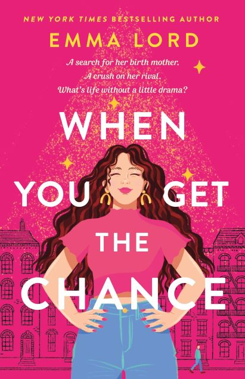

| When 16-year-old Millie Price is accepted into her dream pre-college program for Musical Theatre, she believes her dreams are coming true. That is until her dad refuses to agree to let her do her senior year across the country. She has not worked this hard to not make it to Broadway. When she accidentally stumbles upon her father's Live Journal from the year she was born, she knows this is her chance to find her Musical Theatre loving mother and find out the truth about her past. She sets out on a Mamma Mia inspired quest for answers but could her stage manager rival foil the whole plan? Or will he be the romance she was not expecting?
This coming of age novel about the search for identity and what family means is the perfect book for all theatre lovers! My thoughts on this book will be posted via instagram stories on the 3rd Friday of the month! Join me live to discuss! Instagram: @Brookelish |  |
|---|
If you want to live Millie Price's dream day in NYC, follow this 1-day trip itinerary! |
|---|
| Time and Activity | Description of Activity |
| 8:30 Wake up at The Row NYC! | I love this hotel! The vibe is so cool. It has lots of fun lights, colors, and design. It is the perfect aesthetic for a theatre nerd. It is incredibly close to the theatre district. The cafeteria attached is great for a quick bite and one of the best theatre gift shops is next door! This is also a very inexpensive hotel for the location and amenities! |
| 10:00 Get brunch at Ellen's Stardust Cafe! |
This 1950s style diner is world famous. Not only is it like walking into the past, but some of Broadway's up and coming stars will serenade you through dinner. If you are in NYC to get the most of Broadway, this is the perfect restaurant for you. Brandon Ellis, Eric Michael Krop, Stephen Tyler Davis, and Alysha Umphress (Shirley) are all former employees of this NYC staple! | 11:30 Check out Bryant Park |
Bryant Park is a small oasis in the middle of the city. See street performers, historical landmarks, and beautiful landscaping while getting a calm breath before your long day of activities. |
| 2:00 See Moulin Rouge on Broadway! |
Millie's love for the extravagant made me think Moulin Rouge would be the perfect Broadway show for When You Get the Chance lovers! It has the spectacular, love story, joy, and heartbreak of the book. I'm also fairly certain the Broadway hunk she delivered a dog to was inspired by the lead in this show! Winner of 10 Tony Awards- including Best Musical! |
| 5:30 Get Dinner at Sardi's! |
Sardi's is iconic to theatre lovers. There is no doubt that Millie has been dying to dine here for her entire life! This restaurant is a popular pre and post show hangout for Broadway stars. I can see her hanging out here, looking for Derek Klena after Moulin Rouge! Fun fact: the idea for the Tony Awards was devised in this very resturant! |
| 8:00 See Dear Evan Hansen on Broadway! |
The theme of the teenage search for belonging made me choose this show for lovers of When You Get the Chance. Evan does not have the confidence that Millie does, but he is struggling with many of the same issues that she is. The complicated relationships between teenagers and parents is also heavily explored through this piece. Get your tissues ready for this one! And do not let the horrific movie version stop you from taking a chance on this beautiful play! Winner of 6 Tony Awards- including Best Musical! |
| 11:00 Get the world famous Schmackary's Cookies! |
If you have been to Schmackary's before, you know that no NYC trip is complete without one of their delicious cookies! Flavors change often so every time you can try a new cookie! Broadway stars are also not immune from the cookie allure! Keep your eyes peeled while chowing down on your cereal killer cookie! |
| 11:30 See Times Square at Night! |
It's an icon. Some may say it is overrated-- and during the day it might be. But Times Square is truly something to see at night time. Don't be too cool to check it out at least once! |